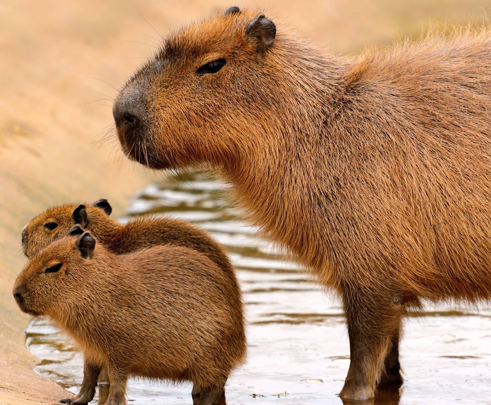
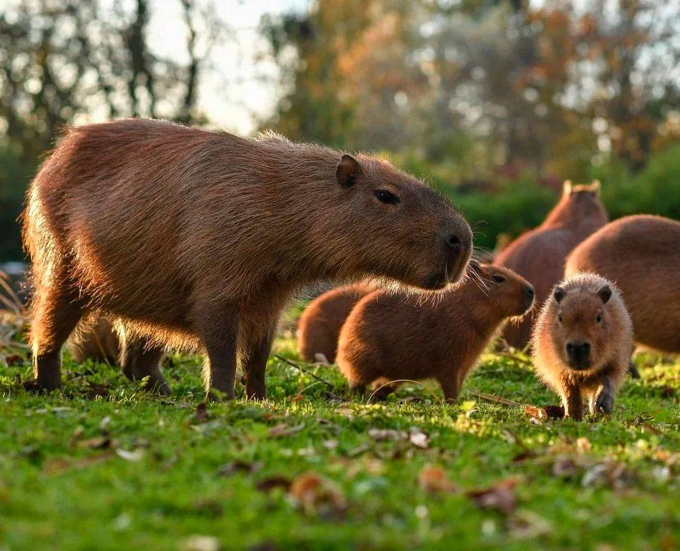

Капибары

|
Капиба́ра, или водосви́нка (лат. Hydrochoerus hydrochaeris) — полуводное травоядное млекопитающее из подсемейства водосвинковых (Hydrochoerinae), один из двух (наряду с малой водосвинкой) ныне существующих видов рода водосвинки. Капибара — самый крупный среди современных грызунов.
|
Внешний вид

|
Длина тела взрослой капибары достигает 1—1,35 м, высота в холке — 50—60 см. Самцы весят 34—63 кг, а самки — 35—65,5 кг (измерения произведены в венесуэльских льяносах). Самки, как правило, крупнее самцов.
Телосложение тяжёлое. Внешне капибара напоминает гигантскую большеголовую морскую свинку. Голова крупная, массивная с широкой, тупой мордой. Верхняя губа толстая. Уши короткие, округлые. Ноздри широко расставлены. Глаза маленькие, расположены высоко на голове и отнесены несколько назад. Хвост рудиментарный. Конечности довольно короткие; передние — 4-палые (пальцев было шесть), задние — 3-палые. Пальцы соединены небольшими плавательными перепонками и снабжены короткими сильными когтями. Тело покрыто длинными (30—120 мм) и жёсткими волосами; подшёрсток отсутствует. Окрас верхней стороны тела от рыжевато-бурого до сероватого, брюшной, как правило, желтовато-бурый. Молодняк окрашен светлее. У половозрелых самцов на верхней части морды расположен участок кожи с многочисленными крупными сальными железами. У самок имеется 6 пар брюшных сосков.
|
Образ жизни и питание

|
Ведёт полуводный образ жизни; от воды редко удаляется более чем на 500—1000 м. Её распространение связано с сезонными колебаниями уровня воды — во время сезона дождей капибары рассеиваются по территории, в сухой сезон скапливаются по берегам крупных рек и других постоянных водоёмов и зачастую проходят в поисках воды и пищи значительные расстояния.
Эти грызуны обычно активны днём, но если их часто беспокоят люди и хищники, то переходят на ночной образ жизни. Капибара прекрасно плавает и ныряет; высокое расположение на голове глаз, ушей и ноздрей позволяет ей при плавании держать их над водой.
Естественные враги животного — дикие собаки, крокодиловые кайманы, оринокские крокодилы, ягуары, оцелоты, анаконды. От наземных хищников они скрываются под водой, дыша через ноздри, которые остаются на поверхности.
Питание у капибары на воле включает в себя плоды и клубни, сено и траву, водные растения.
|